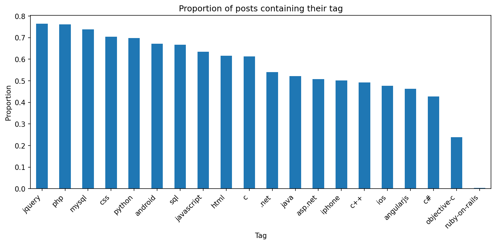
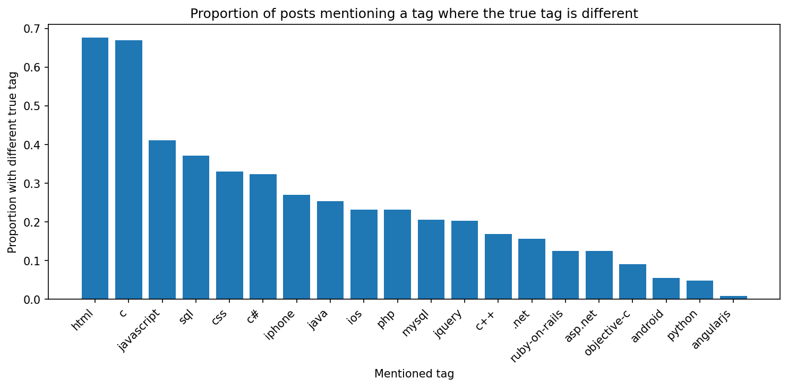
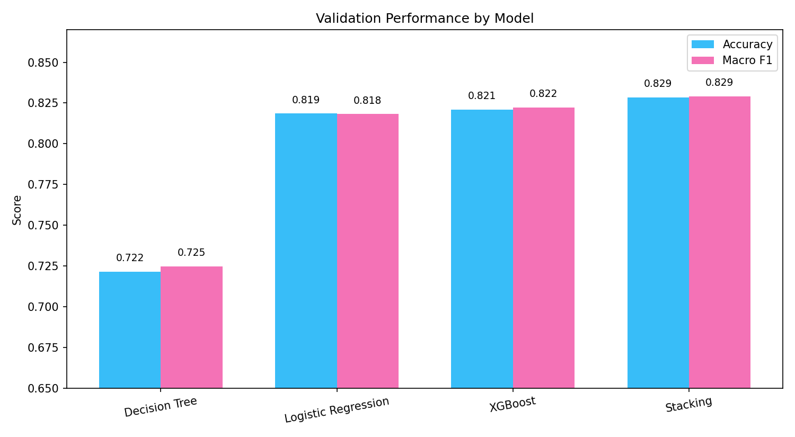
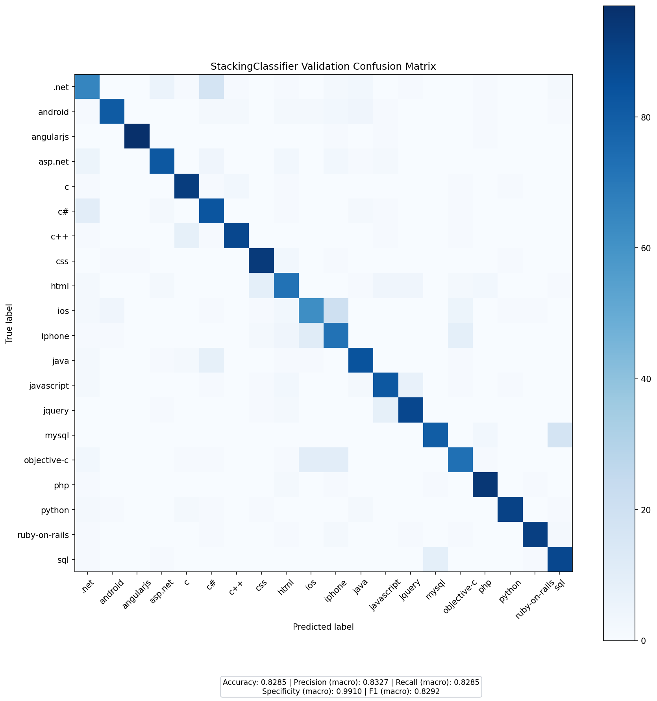

A fact-checked overview of the current code pipeline and the latest saved evaluation artifacts for predicting one of 20 Stack Overflow tags from short posts.
Ahmed MANSOUR & Lancelot TARIOT CAMILLE
Supervised by: Prof. Elöd EGYED-ZSIGMOND
Equally distributed across 20 Stack Overflow technology tags.
How the current repository transforms raw text into predictions:
0_statistics.py
Tag mentions, misleading mentions, exclusive words, phrases, and ratios.
1_generate_vectors.py
664 columns from tag features, phrase counts, word counts, char counts, and TF-IDF.
2_find_best_hyperparameters.py
BayesSearchCV with stratified CV and macro F1 scoring; active search spaces are currently LR and Decision Tree.
3_individual_predictions.py
Prediction script supports Logistic Regression, Decision Tree, and XGBoost when compatible tuned results exist.
4_stacking_classifiers.py
Stacking and voting variants; the repository still contains a saved StackingClassifier artifact from the previous full run.

Not all tags are explicitly mentioned. jQuery appears in 76.5% of its posts, while Ruby-on-Rails is explicitly mentioned in only 0.35% of its posts.

Explicit mentions can still be deceptive: 67.6% of HTML mentions and 66.9% of C mentions occur in posts whose true tag is something else.
The current FeatureExtraction pipeline converts raw posts into structured indicators before TF-IDF:
We use custom negative-lookaround expressions (?<![a-z0-9#\+\.-]) to distinguish tags such as C, C#, C++, and .NET correctly, and we add features for spellings such as c sharp, cpp, and asp net.
We pre-computed lists of Exclusive Words (words existing in only ONE class's training data) and Common Phrases (like public class). Our script counts the occurrences of these dictionaries per post.
We count punctuation density with count_special_chars, then combine those handcrafted counts with a 500-feature TF-IDF representation to capture both syntax and vocabulary.
Each post ends up as a 664-column modeling row: 164 handcrafted/count features plus 500 TF-IDF features.
The exported CSV places handcrafted columns such as contains_class__*, count_exclusive_words__*, and count_phrase__* next to TF-IDF columns such as tfidf__*.
Rather than raw word counts, our TfidfVectorizer down-weights ubiquitous tokens and emphasizes terms that are more informative for each class.
The prediction scripts currently support these individual models:
The search code uses BayesSearchCV with macro F1 scoring and stratified cross-validation, and its active search spaces currently cover Logistic Regression and Decision Tree.
However, the current vector file has 664 columns, while the saved hyperparameters.json results were produced on an older 662-feature schema, so they are no longer compatible with the current vectors.
The ensemble code is current, but the saved ensemble outputs are archived artifacts from the previous 662-feature run.
The current code supports StackingClassifier, StackingClassifierPassthrough, SoftVotingClassifier, and HardVotingClassifier.
The saved ensemble artifact in predictions/ is a StackingClassifier using a Logistic Regression meta-estimator on base-model probabilities.
The stacking process uses an internal 3-fold stratified cross-validation on the training split before evaluation on the external 5% holdout.
These metrics come from the latest saved StackingClassifier validation artifact on a 2,000-row holdout from the previous 662-feature run.

In the latest saved artifacts, the ranking is StackingClassifier (82.85% accuracy), XGBoost (82.10%), Logistic Regression (81.85%), then Decision Tree (72.15%).

The current project state confirms that naive tag matching is too noisy for this dataset, especially on overlapping tags such as C, HTML, CSS, and framework names.
Combining handcrafted regex features, exclusive words, phrase counts, TF-IDF vectorization, Bayesian tuning, and stacking produced 82.85% validation accuracy and 0.829 macro F1 in the latest saved full run, while the current 664-feature pipeline still needs a fresh end-to-end rerun.
Questions & Discussion